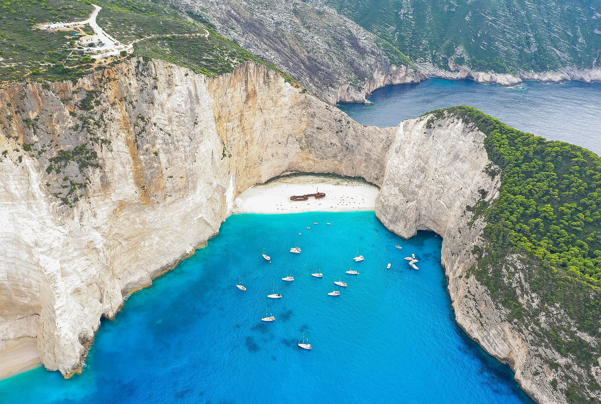

01 · Zakynthos · view only for now
Navagio (Shipwreck) Beach
Navagio is the cove on Zakynthos with the rusting wreck of the Panagiotis on white sand, closed in by cliffs. There is no path down from the clifftop; the traditional access is by boat. As of 23 November 2026 you should treat landing and swimming as off limits (see the status table). Boat trips still view the wreck from the water, and the clifftop platform is the land viewpoint when it is open.
Tip: Reach the viewpoint by road on the north-west coast. For a boat view, operators usually leave from ports such as Agios Nikolaos, Porto Vromi or Zakynthos Town — and they must keep their distance from the sand. Confirm the current rule 24–48 hours before you go.
Directions: Google Maps · Apple Maps
Photo: dronepicr, CC BY 2.0, via Wikimedia Commons
Sources: Visit Greece: Navagio Beach · 2026 decision text via Odighos tou Politi
See Navagio Beach on our Beaches deck →
Find a stay near Navagio (Shipwreck) Beach →